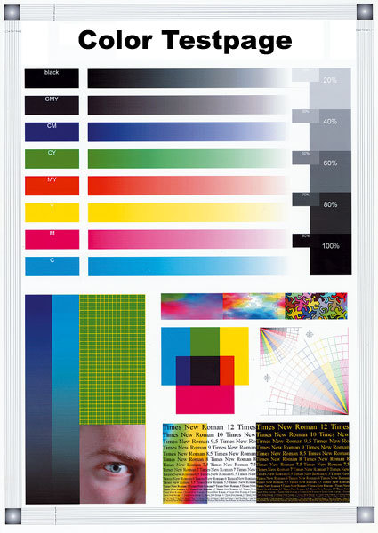
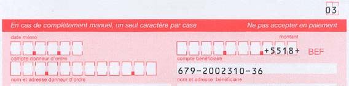
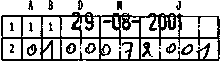

Tweet
Tweet
When you scan in black-and-white, the scanner sees each individual dot as either black or white. Black-and-white images are also called “bilevel”, “bitonal” or “lineart” images. Admittedly, black-and-white images can use black-and-white patterns to simulate shades of grey (“dithering”).
A single bit suffices to represent the pixel’s color in the image file: 1 stands for black, 0 for white. (In technical terms: the bit depth is 1.)
Greyscale images contain shades of grey. A range of 256 grey levels from white to black is used to compose the image. (256 possible values take 8 bits.)
Color images consist of pixels with different mixtures of red, green, and blue. Each mixture represents a different color. As there are 8 bits per pixel for the red, green, and blue “channel”, you get a color range of 16.7 million colors (RGB “true” colors). (Using 24 bits, you can represent 16.7 million colors.)
Also note that most scanners have an invisible or “dropout” color when scanning in black-and-white. The documentation of your scanner can tell you which color is the dropout color. Or else you can scan a color test page in black-and-white, you’ll quickly see which color wasn’t detected by the scanner.

If the dropout color of your scanner is red, all red information gets ignored by the scanner. (Should you have red text on a white background, you’ll get a white, empty scan!) On the other hand, a red background can’t bother you… Dropout colors are used extensively in form reading applications — the dropout color guides one to fill out the form properly, with all the data in the right place. The preprinted form doesn’t appear in the scanned image, leaving only the information filled out by the user! This increases OCR effectiveness and decreases the image size.

Most (light) pastel colors are also ignored by the scanners. If you want to add handwritten notes on a document that shouldn’t show up in the scans, use a light grey pencil. But if you want to automate form reading, you’ll need to have the forms filled out with a thick pen that gives crisp, clear scans, not fade, broken shapes.

OCR software supports all color modes: your scans can be black-and-white (1-bit depth), greyscale (8-bit depth) or color (24 or higher bit depth)! As OCR software supports black-and-white, greyscale and color images on an equal basis, you are free to choose the color mode that best suits your needs.
One obvious advantage of scanning documents in color is that you maintain the color graphics in the output without having to “reduce” them to crude black-and-white graphics. To include lineart graphics in the recognized documents, you can scan in black-and-white; to include black-and-white photos, you can scan in greyscales.
But why reduce the bit depth of the images during the scan? Because scanning in greyscale or color has a downside: greyscale and color images are much bigger. The scanning takes longer and you need more disk space to store the images.
Let’s take things step by step, shall we? — Take us where the rainbow ends! — B is for binarize — What gets read and what doesn’t — Lines, lineskew and drop letters — Segmenting words and characters — Stylized fonts — Why is OCR software called omnifont? — What’s the role of linguistics in the OCR process?
Home page — Intro — Scanners — Images — History — OCR — Languages — Accuracy — Output — BCR — Pen scanners — Sitemap — Search — Feedback – Contact